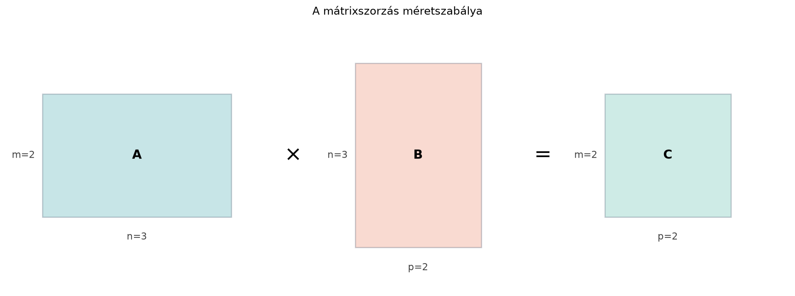

Az előző alfejezetben a mátrix–vektor szorzással egyetlen vektort
transzformáltunk. A gépi tanulásban és a numerikus számításokban viszont
ritkán van egyetlen vektorunk: egy adatmátrix, egy mini-batch kép vagy
egy token-sorozat egyszerre sok vektort tartalmaz. Ha ezekre ugyanazt a
transzformációt alkalmazzuk, az eredmény mátrix lesz, és ezt egyetlen
mátrix–mátrix szorzásként írhatjuk fel. Ráadásul ha előbb
,
majd
transzformál, akkor az együttes hatás mátrixa a kettő mátrixszorzata.
Így válik a mátrixszorzás a lineáris algebra talán legfontosabb
műveletévé, és a neurális hálók, CNN-ek és transzformerek szinte minden
rétegének alapműveletévé.
Ebben az alfejezetben a mátrixszorzást négy, egymással egyenértékű
nézőpontból tanuljuk meg, és megbecsüljük a műveletigényét. A négy nézet
nem elméleti játék: más-más helyzetben másik nézet teszi átláthatóvá,
milyen szerkezetet örököl az eredmény.
6.3.2 Szemléletes kép
A mátrixszorzás alakja olyan, mint egy cső: a belső dimenziónak
pontosan illeszkednie kell. Például ha
és
,
akkor a szorzat
lesz:

A mátrixszorzás méretszabálya - A 2×3-as
A és a 3×2-es B szorzata 2×2-es C; a belső 3-as dimenzió
eltűnik.
A belső, középső
dimenzió az összegzés dimenziója: ezt a számot az első mátrix oszlopai
és a második mátrix sorai egyaránt hordozzák. A külső dimenziók,
és
,
maradnak meg az eredményben. Ha a belső dimenziók nem egyeznek, a
szorzat nem értelmes; ilyenkor gyakran transzponálással lehet
kompatibilissé tenni az alakokat.
6.3.3 Formális definíció
Definíció. Legyen
-es,
pedig
-es
mátrix. Az
szorzat az az
-es
mátrix, amelynek
eleme az
sorának és a
oszlopának skalárszorzata:
Röviden:
.
A definícióban fontos a sorrend:
az
sorának
eleme,
pedig a
sorának
eleme. A
fut végig az összegzésen; emiatt kell, hogy
oszlopainak száma egyenlő legyen
sorainak számával.
6.3.4 A négy nézőpont
6.3.4.1 1. Elemenkénti nézet: sor ·
oszlop
Az iménti definíció maga az elemenkénti nézet. Minden
elem egy sor és egy oszlop skalárszorzata. Ez a legalkalmasabb kézi
számoláshoz, ha csak néhány elemre van szükségünk.
6.3.4.2 2. Oszlopnézet:
oszlopai mint
-oszlopkombinációk
Írjuk
-t
az oszlopaiból:
.
Ekkor
A szorzat
oszlopa tehát az
oszlopainak lineáris kombinációja, ahol az együtthatók
oszlopának elemei. Ez a nézet megmutatja:
minden oszlopa az
oszlopterében fekszik. Az oszlopteret később, a 10.1. alfejezetben (Oszloptér és nulltér) vizsgáljuk meg alaposan.
6.3.4.3 3. Sornézet:
sorai mint
-sorkombinációk
Jelölje
az
sorát mint
-es
sorvektort. Ekkor az
sora
azaz a
sorainak lineáris kombinációja, ahol az együtthatók az
sorában állnak. Ez a nézet akkor hasznos, ha a kimenet sorait szeretnénk
megérteni, például amikor egy adatmátrix minden sorát ugyanaz a
transzformálja.
6.3.4.4 4. Külső szorzat
összegnézet
Bontsuk most
-t
oszlopaira,
-t
pedig soraira. Legyenek
oszlopai
,
sorai pedig
,
.
Ekkor
Itt minden
egy
-s
külső szorzat (oszlop × sor), azaz olyan mátrix, amely egyetlen
oszlopvektor és egyetlen sorvektor szorzataként áll elő. A mátrixszorzás
tehát
darab ilyen mátrix összege. Ez a nézet az SVD és az alacsony rangú
közelítések alapja, és akkor is segít, ha egy szorzatot „rétegekre”
akarunk bontani.
6.3.5 Kidolgozott példa: ugyanaz a
szorzat négyféleképpen
Legyen
A méretszabály szerint
.
Elemenként. A négy elem:
Tehát
Oszlopnézet.
oszlopai:
Számítsuk ki:
A két oszlopból összerakva
.
Sornézet.
sorai:
Ekkor
A két sorból összerakva ugyanazt az eredményt kapjuk.
Külső szorzat összegnézet.
oszlopai:
sorai:
A három külső szorzat:
Összegük:
A négy nézet ugyanazt az eredményt adja.
6.3.6 Indoklás: miért ugyanaz a
négy nézet?
A négy nézet mindegyike a definícióbeli összegzésből következik.
Rögzítsük a
oszlopot. Az elemenkénti definíció szerint
A jobb oldal éppen az
vektor
eleme, hiszen
eleme
.
Ezért a teljes
oszlop
,
ami az oszlopnézetet adja.
Most rögzítsük az
sort. A
kifejezés a
sorának
elemét
együtthatóval veszi, tehát a teljes
sor a
sorainak lineáris kombinációja
együtthatókkal. Ez a sornézet.
A külső összegnézethez írjuk a szorzatot elemenként:
Itt
az
oszlopvektor
eleme,
pedig a
sorvektor
eleme. A
külső szorzat
eleme pontosan
,
így a mátrixok összege is ugyanaz.
6.3.7 Számítógépes ellenőrzés
NumPy-ban
A NumPy-ban a mátrixszorzás jele @, nem *.
Az alábbi kód az előző példát reprodukálja:
import numpy as npA = np.array([[1, 2, 0], [3, 1, 1]])B = np.array([[2, 1], [0, 4], [1, 2]])print("AB =\n", A @ B)print("A @ B[:, 0] =", A @ B[:, 0])print("A @ B[:, 1] =", A @ B[:, 1])C = np.zeros((2, 2), dtype=int)for k inrange(3): # n = 3 C = C + np.outer(A[:, k], B[k, :])print("külső szorzat összeg =\n", C)
Várt kimenet:
AB =
[[2 9]
[7 9]]
A @ B[:, 0] = [2 7]
A @ B[:, 1] = [9 9]
külső szorzat összeg =
[[2 9]
[7 9]]
A NumPy 0-tól indexel, ezért a matematikai
a kódban range(3), azaz
.
6.3.8 Műveletigény: hány flop egy
mátrixszorzás?
Egy mátrixszorzat költségét lebegőpontos műveletekben (floating-point
operations, röviden flop) mérjük. Egy szorzás 1 FLOP, egy szorzás és egy
összeadás együtt 2 FLOP; ebben a könyvben a mátrixműveletek költségét
végig ezzel a 2 FLOP-os konvencióval adjuk meg, és ahol csak a szorzások
számát adjuk meg, azt külön jelezzük. Tegyük fel, hogy
-es,
pedig
-es.
Az eredmény
elemből áll. Minden egyes
elem kiszámításához
szorzást és
összeadást kell elvégezni, azaz
flopot. Mivel
darab elem van, a teljes költség
A
közelítés relatív hibája
,
tehát nagy
esetén elhanyagolható, és a gyakorlatban szinte mindig ezt használjuk.
Ha például
és
,
akkor
,
,
,
így
flop, tehát kerekítve mintegy
millió flop. Ezek illusztratív játékmodell-méretek, nem konkrét
modellből vett értékek.
A mátrixszorzás a mélytanulás egyik legdrágább alapművelete, mert a
sűrű rétegek lényegében affin transzformációk:
.
Egyetlen előrecsatolás is sok mátrixszorzással jár, és a
visszaterjesztés még többet használ. A figyelemmechanizmusban a
és a pontszámok
-vel
való szorzása szintén ilyen, gyakran a szekvenciahossz négyzetével
növekvő költségű mátrixszorzat.
A mátrixszorzás asszociatív:
,
de a számítási költség nem mindegy, melyik zárójelezést választjuk.
Például ha
,
,
,
akkor
esetén:
költsége
,
majd a
-ös
eredmény
-vel
való szorzata
,
összesen
flop.
esetén:
költsége
,
majd
szorzata a
-es
köztes mátrixszal
,
összesen
flop.
A két végeredmény egzakt algebrai értelemben ugyanaz, de az első
zárójelezés tizedannyi műveletből éri el. Nagy modelleknél ezért a
keretrendszerek gondosan választják meg a számítási sorrendet.
Lebegőpontos aritmetikában a zárójelezés megváltoztathatja a kerekítések
sorrendjét, ezért a két eredmény bitre nem feltétlenül azonos;
ellenőrzéshez np.allclose-t használjunk megfelelő
toleranciával (lásd a 16.2. alfejezetet). A kisebb műveletszám önmagában
nem garantál kisebb kerekítési hibát.
6.3.9 Blokkmátrixok és blokkos
szorzás röviden
A nagy mátrixokat gyakran blokkokra partícionáljuk. Ha a partíciók
kompatibilisek, a blokkokkal ugyanúgy szorozhatunk, mintha közönséges
elemek lennének. A fenti példában partícionáljuk
-t
két oszlopblokkra:
és
-t
két sorblokkra:
A blokkos szorzás szerint
Kiszámolva:
és az összeg ismét
.
A blokkos felbontás az alapja annak, hogy a gyakorlati mátrixszorzó
könyvtárak a mátrixot memóriabarát darabokra vágják; a tényleges
GPU/GEMM-implementációt később, a 23.3. alfejezetben (Gyors mátrixszorzás: blokkolás, memória és hardver)
vizsgáljuk meg.
6.3.10 Kapcsolat a gépi
tanulással
A mátrix–mátrix szorzás a gépi tanulás „forró sávja”. Amikor egy
mini-batch
mintából áll, a dense réteg
alakú, ahol
,
.
A
,
így a szorzat
alakja
.
A sornézet szerint a kimenet minden sora a bemenet egy mintájának
transzformáltja, az oszlopnézet szerint a kimenet oszlopai az
oszlopainak lineáris kombinációi. A külső szorzat nézet pedig
megmutatja, hogy ha
alacsony rangú, a réteg számítása kevesebb külső szorzat összegeként is
felírható; erre épül a LoRA ötlete is, amelyet később a 23.1.
alfejezetben (LoRA: alacsony rangú adaptáció
finomhangoláshoz) tárgyalunk.
A belső dimenziók nem egyeznek. Például ha
-es
és
is
-es,
akkor
nem értelmes, mert az első mátrix oszlopainak száma 2, a második
sorainak száma pedig 3. Ha a cél az, hogy a két mátrixot összeszorozzuk,
gyakran
transzponáltját kell használni:
alakja
.
A * és a @ összekeverése
NumPy-ban. A * elemenkénti szorzást végez, és csak
akkor működik, ha a két tömb alakja megegyezik vagy broadcastinggal
kompatibilis. Mátrixszorzáshoz @ vagy
np.matmul kell.
A sor- és oszlopnézet felcserélése. Az
oszlopnézetben
oszlopait szorozzuk
-val,
a sornézetben pedig
sorait szorozzuk
-vel.
Ha valaki az
oszlopait akarná
oszlopaival kombinálni, az nem adja a definíció szerinti
szorzatot.
A külső szorzat orientációjának eltévesztése. A
külső szorzat összegben az
oszlopait és a
sorait kell párosítani: oszlop × sor. A sor × oszlop viszont
skalárszorzatot adna, nem
-s
mátrixot.
6.3.12 Feladatok
Legyen
.
Milyen alakú
kell ahhoz, hogy
legyen? Indokold a méretszabály alapján!
Számítsd ki kézzel az
szorzatot, ahol
Ellenőrizd az oszlopnézettel is!
NumPy-ban számítsd ki az előző szorzatot, és külső szorzatok
összegeként is állítsd elő np.outer segítségével! Várt
kimenetként add meg a kapott mátrixot.
Adott
,
,
.
Számítsd ki mindkét zárójelezéshez a hozzávetőleges flopszámot a
becsléssel, és döntsd el, melyik olcsóbb:
vagy
?
6.3.13 Megoldások
A méretszabály szerint
.
Ahhoz, hogy a szorzat értelmes legyen,
sorainak száma 3 kell, mert
oszlopainak száma 3. Ahhoz, hogy az eredmény oszlopainak száma 5 legyen,
oszlopainak száma 5. Ezért
.
Elemenként:
Oszlopnézettel:
oszlopai
Ekkor
A két oszlopból összerakva ugyanaz adódik.
Egy lehetséges kód:
import numpy as npA = np.array([[1, 0, -1], [2, 1, 0]])B = np.array([[1, 2], [0, 1], [-1, 0]])C = np.zeros((2, 2), dtype=int)for k inrange(3): C = C + np.outer(A[:, k], B[k, :])print("AB =\n", A @ B)print("külső szorzat összeg =\n", C)
Várt kimenet:
AB =
[[2 2]
[2 5]]
külső szorzat összeg =
[[2 2]
[2 5]]
esetén:
:
,
,
,
költség
.
:
a köztes mátrix
-ös,
-es,
költség
.
Összesen
flop.
esetén:
:
,
,
,
költség
.
:
a köztes mátrix
-es,
-as,
költség
.
Összesen
flop.
Tehát
a tizedannyi műveletet igénylő, olcsóbb zárójelezés.
6.3.14 Rövid összefoglaló
A mátrix–mátrix szorzás az
méretszabály szerint működik, és az eredmény elemei az első mátrix
sorainak és a második mátrix oszlopainak skalárszorzatai. Ugyanazt a
szorzatot négy nézőpontból láthatjuk: elemenként, oszloponként mint
lineáris kombináció, soronként mint
,
valamint
külső szorzat
összegeként. A műveletigény hozzávetőlegesen
flop, ezért a mátrixszorzás a mélytanulás egyik legdrágább alapművelete.
Blokkos partícionálással nagy mátrixok szorzata is visszavezethető
kisebb blokkmátrixok szorzataira.